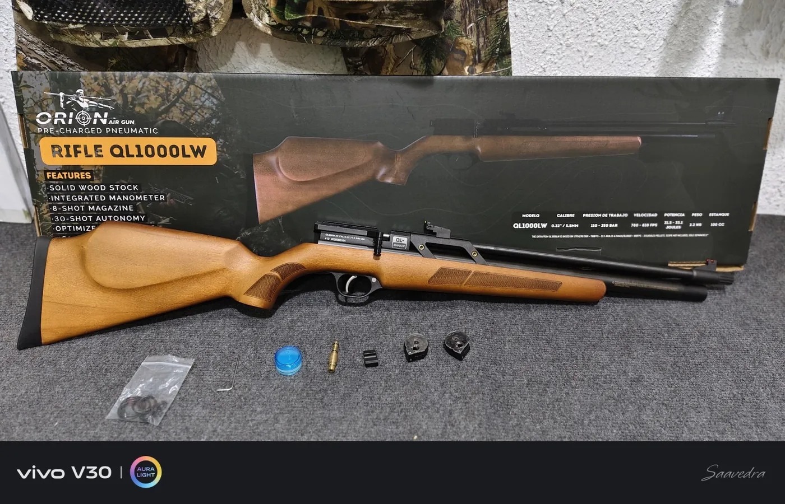

Rifles PCP
PCP QL-1000LW 5.5MM
$249.900
Rifle PCP regulado calibre 5.5/.22, liviano, compacto y con buena autonomía para tiro recreativo.
Calibre5.5 / .22
Peso2.2 kg
Largo60 cm
Cañón46 cm
Capacidad aire100 cc
Carga250 bar
Velocidad780–810 fps
Potencia31.5–33.1 J